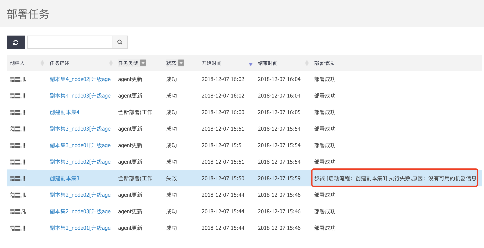
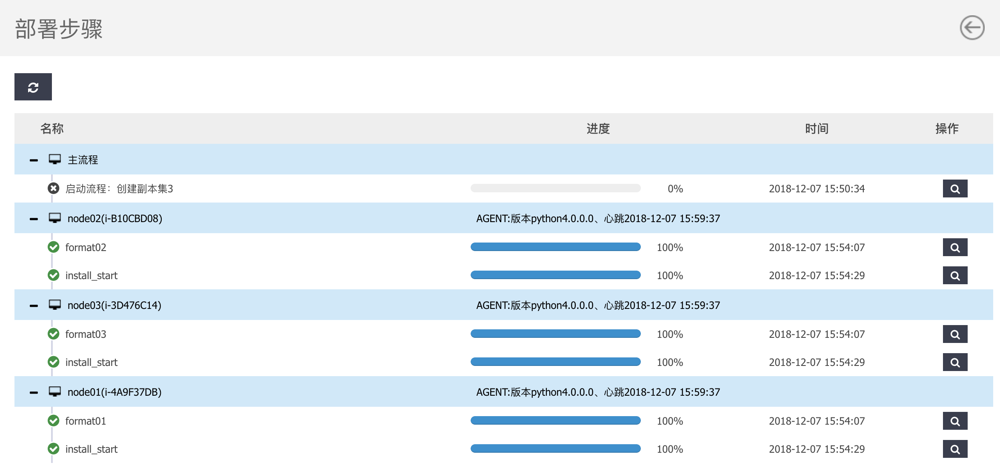
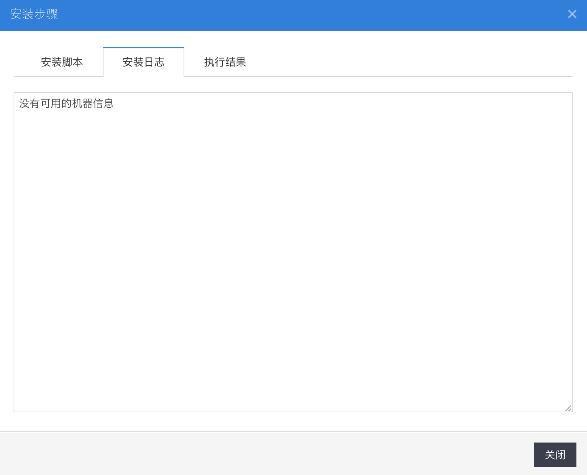
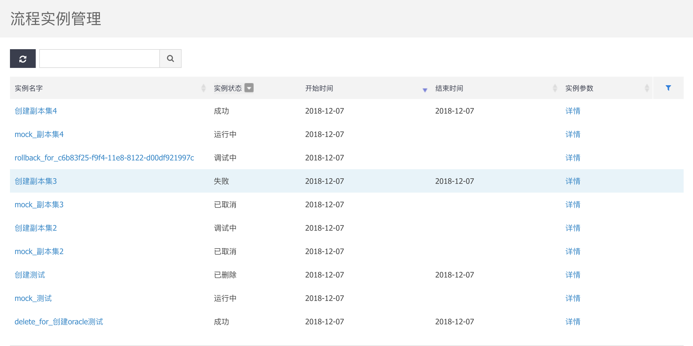
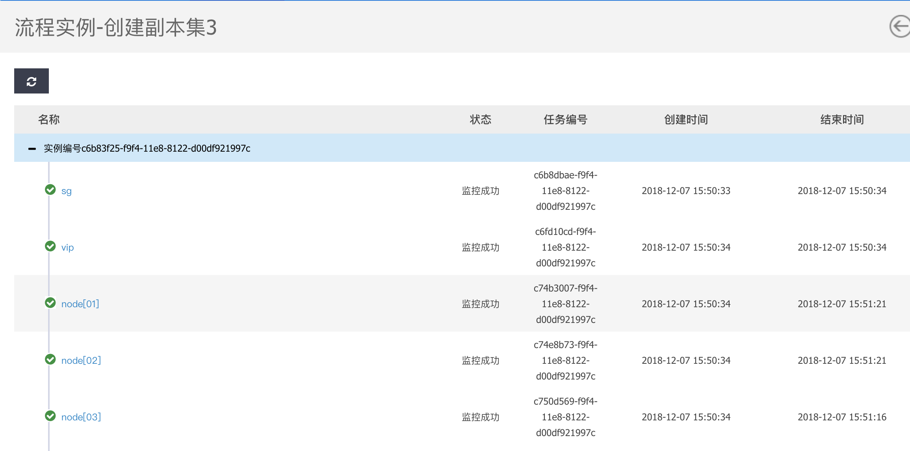
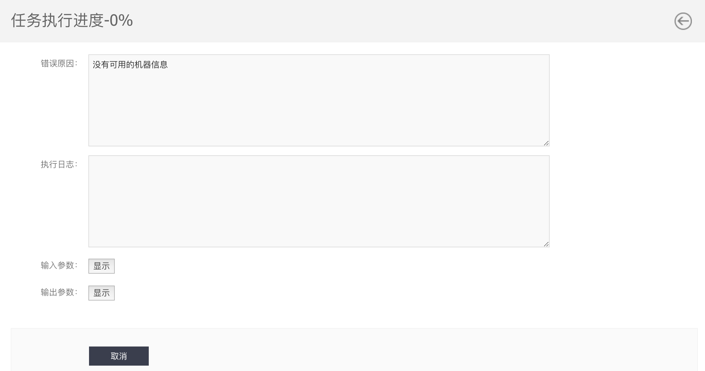
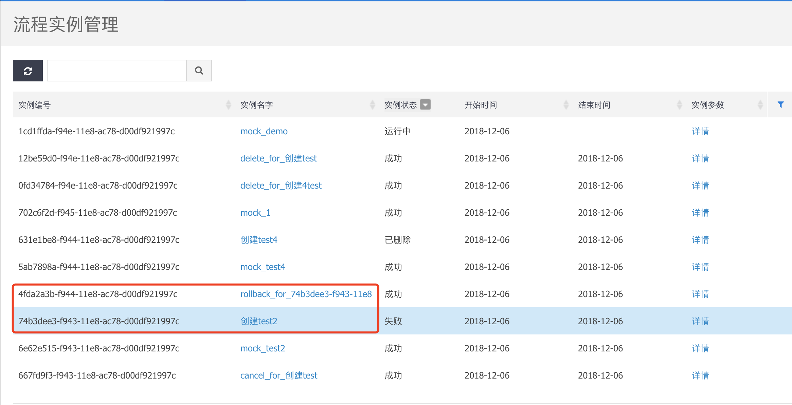
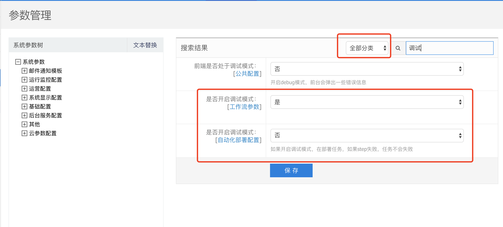
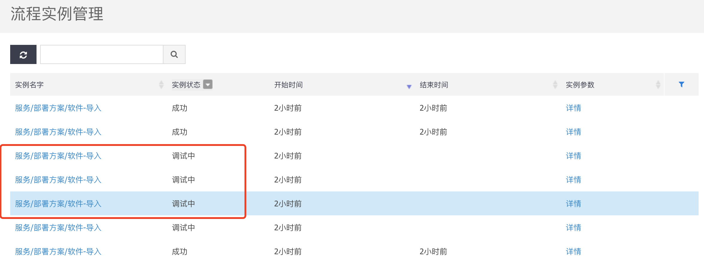
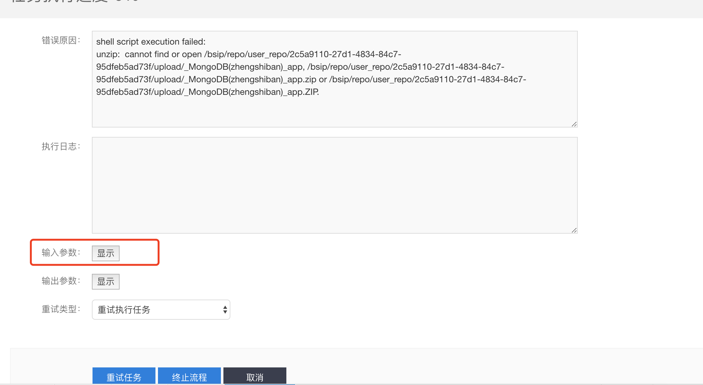

常见问题查看及处理办法
部署过程梳理
采集参数，提交订单
- 如果是传统部署模式，采集页面失败，则需要排查规格模板问题，选择重建规格模板或者修正规格模板
- 工作流模式，则检查参数模板的json是否合法，例如多出的
引号，大括号等
订单处理，产生部署任务
- 提交订单失败：查看日志
/bsip/logs/online下对应的bingocloud-online.log,将日志发送产品团队处理
- 提交订单失败：查看日志
部署任务处理，启动部署流程
部署任务未产生：查看
/bsip/logs/coreService下的日志，发送产品团队处理查看部署任务的进度及日志
配置管理->高级服务->部署任务查看

点击任务名称，查看步骤详情

点击搜索按钮，查看步骤的日志信息，分析失败原因

流程实例启动创建资源的子订单
流程实例创建失败：查看部署任务中，启动流程的日志信息
流程实例运行失败：查看流程实例的日志信息

点击实例名字，进入列表页面

点击task的名称，进入详情页面，查看进度和日志

流程实例产生指令任务，通过部署任务下发
调试模式说明
工作流模式中，默认关闭调试模式，失败的流程会自动触发回滚流程，销毁创建的资源。

如果开启调试模式，则不会直接触发失败，流程将会暂停在当前节点，允许对流程的参数进行修改，并重新运行流程。
系统管理->开发者->参数管理


